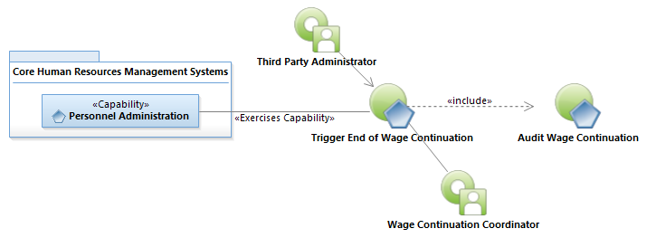
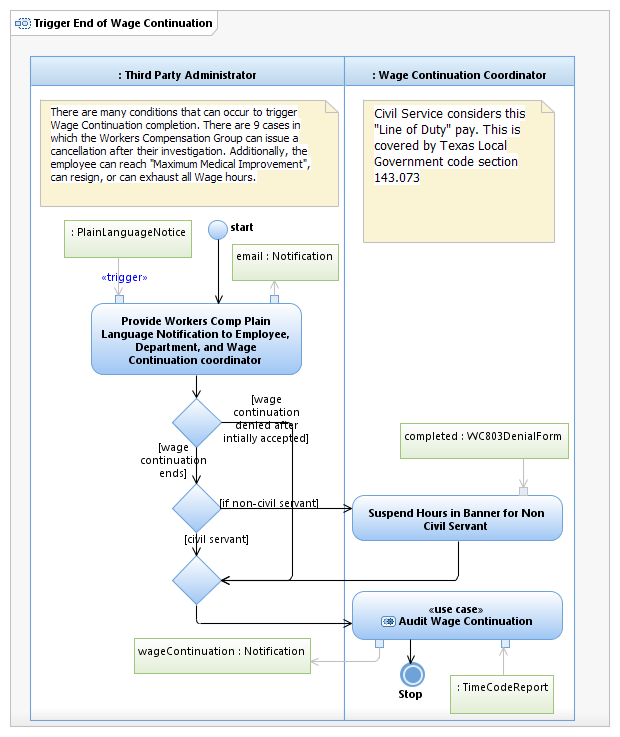

Use Case Model: Trigger End of Wage Continuation
Architect: Aaron Brown, IT Enterprise Architect Senior
Date Last Modified: 4/5/2012
User Review: Prieta Aguilar/Leslie Milvo Wage Continuation Coordinator
Date: 4/5/2013
There are many conditions that can occur to trigger Wage Continuation completion. There are 9 cases in which the Workers Compensation Group can issue a cancellation after their investigation. Additionally, the employee can reach "Maximum Medical Improvement", can resign, or can exhaust all Wage hours. In each situation Banner is modified to reflect the change in wage continuation.
Follow link to Role Definitions

Use Case Model: Trigger End of Wage Continuation

Activity Model: Trigger End of Wage Continuation